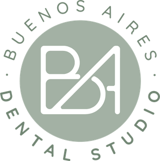
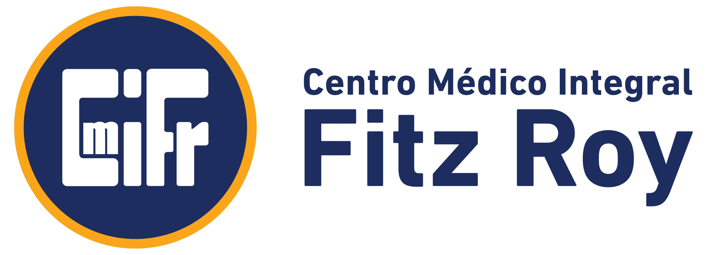
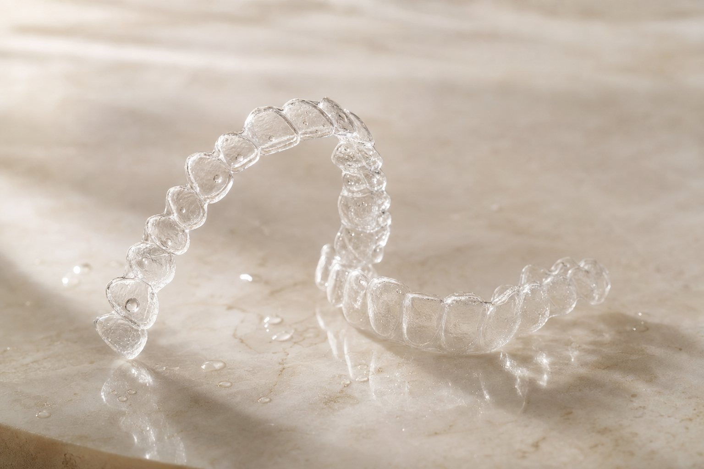
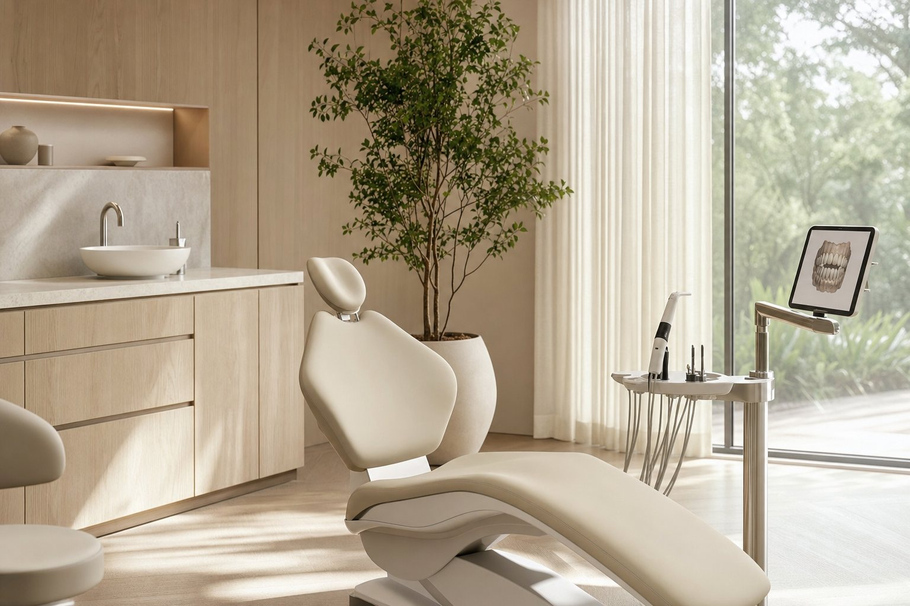
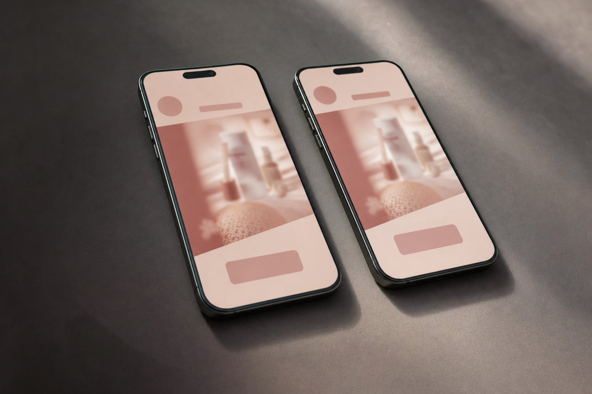
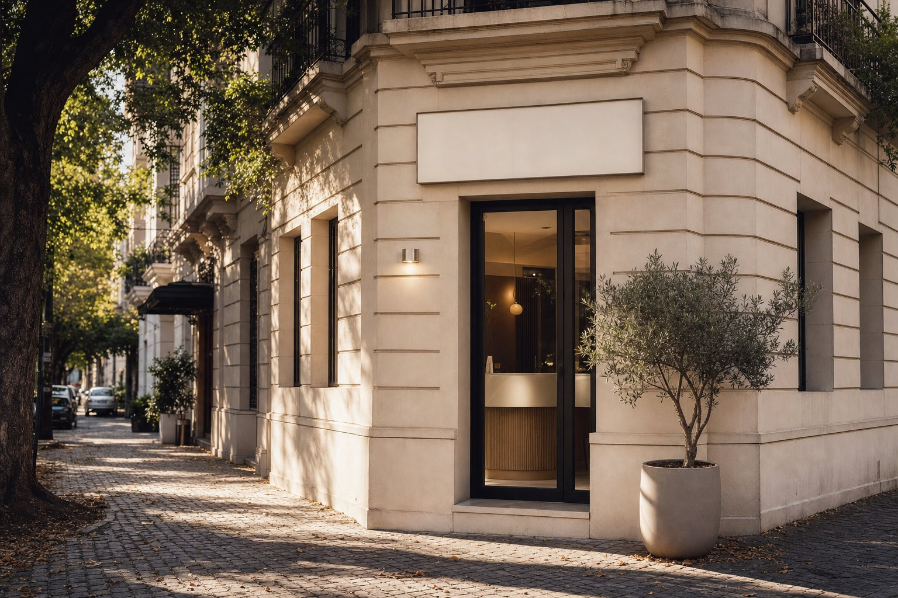
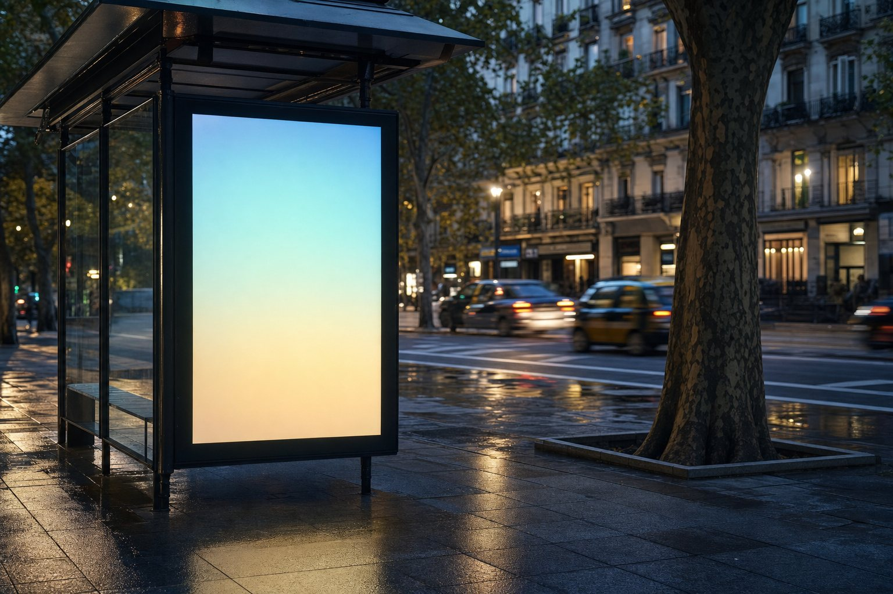

Propuesta comercial · Glow Up · Confidencial
Tu home dice que son la mayor marca de odontología estética digital del país. Tenés +25 sedes, +25 doctores y +3.000 casos para probarlo. Pero en la calle te comunicás como uno más. Este es el plan para cerrar esa distancia.
Popcorn nació como productora audiovisual hace 15 años y hoy somos una agencia integral de 27 personas. El 70% de nuestra cartera es salud: hospitales, laboratorios, centros médicos, medicina laboral y odontología. Trabajamos desde el negocio hacia la comunicación —nunca al revés.
Empezamos por el objetivo comercial —volumen de tratamientos, ticket, margen, costo de adquisición— y desde ahí definimos la comunicación.
Entendemos pacientes, derivantes, doctores e instituciones. Y en odontología ya trabajamos: implantes dentales y odontología general son cuentas activas.
Dirección creativa, diseño, contenido, audiovisual, web, digital signage y paid media internos. Un project manager es tu única puerta de entrada.
 Hospital Universitario AustralSalud · Alta complejidad
Hospital Universitario AustralSalud · Alta complejidad Swiss MedicalMedicina prepaga
Swiss MedicalMedicina prepaga ManLabLaboratorio
ManLabLaboratorio CentraLab25 sedes · Concepto “Estamos cerca”
CentraLab25 sedes · Concepto “Estamos cerca”
BA Dental StudioOdontología · De cero a marca en 12 meses CETAC JuncalDiagnóstico & tratamiento
CETAC JuncalDiagnóstico & tratamiento
CMI Fitz RoyMedicina laboral
Lo dijiste con precisión, Marcos: “queremos tener una campaña con una idea fuerte y trabajarla en todo lo que hacemos, porque queremos empezar a trabajar autoridad de marca”. Y Belén lo cerró: “no queríamos hacer un rebranding, sino crear un concepto”. Esta propuesta hace exactamente eso —y nada más que eso.
Una idea rectora que funcione igual en redes, pauta, web, vía pública y medios tradicionales. Que la gente empiece a recordar la marca.
Foco en adultos jóvenes de clase media-alta. Niños y adolescentes están bienvenidos, pero no son el foco. Mayoría mujeres, con consultas masculinas activas por Instagram.
Es el producto más fuerte y el más rentable. Blanqueamiento, carillas y placas de bruxismo tienen que entrar bajo el mismo eje estético, no como servicios sueltos.
No premium. Belén fue clara: comparados con otras marcas, la percepción es de algo accesible. Ese es el punto de partida, y hay que decidir si es el punto de llegada.
Un dato que nos importa más que el brief. En la reunión pediste algo que casi nadie pide: querés reposicionarte sin cambiar la marca. Eso es más difícil que un rebranding —no podés esconderte detrás de un logo nuevo—. La única forma de lograrlo es con un concepto tan claro que la gente lo reconozca antes de leer el nombre.
Tu home abre diciendo “Elegí la mayor marca de odontología estética digital del país”. Es una declaración de liderazgo. El problema es que no hay una sola pieza en tu comunicación que la sostenga. Y una autoridad declarada que no se demuestra no genera confianza: genera duda.
Es el activo más grande de la categoría y está escondido. En el sitio no aparecen las sedes hasta que el usuario intenta agendar un turno. Sol lo vio en vivo: “yo veo la página web y pienso que son solamente proveedores de alineadores”.
No hay “quiénes somos”, no hay equipo, no hay historia, no hay caras. En una decisión de salud de ticket alto, la humanización de marca no es decoración: es el driver de confianza.
Alineadores, blanqueamiento, carillas de resina y placas de bruxismo conviven como productos separados. Existe el combo alineadores + blanqueamiento con descuento, pero es una promoción: no es un relato.
Financiación con bancos y alianzas como Club La Nación y Bonda son diferenciales reales frente al preconcepto de “la ortodoncia es carísima”. En el relevamiento no los encontramos comunicados en el sitio.
Glow Up tiene infraestructura de líder: red de sedes, cuerpo de doctores, volumen de casos, un índice de satisfacción de 4,8/5 y financiación propia. La comunicación, en cambio, muestra un producto —el alineador— con el mismo lenguaje visual que sus competidores. El concepto que hay que construir no tiene que inventar nada: tiene que hacer visible lo que ya existe.

Medimos el home con PageSpeed Insights de Google el 18/08/2026. La velocidad no es el problema: el contenido principal aparece a los 2,3 segundos y eso está dentro de lo aceptable. El problema son las otras tres notas —seguridad, medición y rastreabilidad— y ese es justamente el precio que se paga cuando se escala la inversión en pauta: sin medición confiable no se sabe qué mensaje funciona, y el costo por consulta sube.
Un Google Tag Manager, dos propiedades de Analytics y dos cuentas de Google Ads conviviendo, más el píxel de Meta con 4 eventos. Historial de cuentas duplicadas: hay que auditar cuál es la fuente de verdad.
Seis familias de íconos cargando en el home —una sola pesa 557 KiB—. Es el 39% del peso total de la página para mostrar un puñado de símbolos.
De los cuales 277 KiB son de los contenedores de Google Tag Manager. Además, más de 40 hojas de estilo bloquean el primer render.
El elemento visual más grande del home se sirve a 565 px de ancho cuando se necesitan 1.130 px. Es la primera impresión de una marca de estética, y se ve blanda.
Una honestidad metodológica. Esta medición es de escritorio. En salud, más del 70% del tráfico suele ser móvil y los puntajes de rendimiento caen ahí. Antes de tocar nada, medimos móvil y con datos de campo reales —no vamos a diagnosticar sobre una sola foto—.
Recorrimos tu embudo como lo recorre un paciente: desde el anuncio hasta el turno. Esto es lo que encontramos en cada paso. Tres de los seis pasos tienen una fuga concreta y medible.
Por qué esto importa para el concepto. Un concepto creativo brillante que desembarca en un embudo con fugas amplifica el problema: más tráfico, misma pérdida. Por eso la etapa 4 —el rediseño web— está en esta propuesta como opcional recomendada. La idea y el lugar donde aterriza tienen que sostenerse mutuamente.

Sol lo dijo sin anestesia en la reunión: “hoy somos iguales a Muak a simple vista”. Mismo tipo de imagen, mismo tipo de mensaje, mismo público, mismo rango de posicionamiento. Pero los precios no son los mismos —y eso cambia todo el análisis—.
| Marca | Precio 2 maxilares | Territorio que ocupa hoy | Su fortaleza | Su punto débil |
|---|---|---|---|---|
| Glow Up | $1.690.000 1 maxilar $1.290.000 |
Producto accesible y profesional. Estética digital. | Red real de +25 sedes y +25 doctores, +3.000 casos, financiación en 3 / 6 / 9 / 12 meses. | No comunica ninguno de esos activos. Sin capa institucional. |
| Muak | $1.899.000 lista $2.599.000 |
Cercanía y relato personal. Marca conversacional, lenguaje inclusivo. | Humaniza con la historia de sus fundadoras. Puerta de entrada gratis por WhatsApp. Oferta con fecha de vencimiento. | No muestra sedes. Compite con descuento del 25%, no con autoridad. |
| Line Up | s/d | Respaldo clínico: “diseñados por ortodoncistas”. | Presencia activa en Instagram y en la subasta de búsqueda paga. | Territorio técnico poco diferenciado; sin relato de marca propio. |
| Odontólogos generales | Variable | Confianza del profesional de siempre. | Relación uno a uno con el paciente y derivación boca a boca. | Sin marca, sin escala, sin inversión en comunicación. |
| Marcas internacionales | USD 3.500–5.000 | Prestigio global y respaldo tecnológico. | Reconocimiento de marca construido durante años. | Precio fuera del alcance del público 25-40 de clase media-alta. |
Y una ventana que ya se cerró. El 13 de agosto, durante la reunión, el sitio de Muak no cargaba mientras seguían pauteando: estaban pagando tráfico que rebotaba. Al 19 de agosto ya está funcionando, con oferta vigente hasta el 31/08. La ventaja competitiva duró seis días. Es la mejor prueba de por qué la autoridad de marca no se construye con oportunismo táctico: se construye con un territorio propio que el otro no te pueda copiar en una semana.
Cuando tres marcas se ven iguales, hablan igual y le hablan al mismo público, el paciente decide por lo único que puede comparar: el precio. Muak ya está jugando ese partido con un 25% de descuento y una fecha de vencimiento. Si Glow Up entra en esa pista, la guerra se pelea sobre el producto más rentable del negocio.
La marca es intercambiable. El paciente pide tres presupuestos y elige el más bajo. Cada punto de descuento sale directo del margen del tratamiento más rentable.
La marca significa algo antes de que se mire el precio. El paciente ya no compara peras con peras: compara “el más barato” contra “el que confío”.
Una marca reconocida convierte mejor con la misma inversión. La autoridad no es un gasto de imagen: es un multiplicador de la pauta que ya estás pagando.
Un concepto que no invente una Glow Up nueva. Que haga imposible ignorar la que ya existe.
Toda la categoría comunica lo mismo: dientes derechos, invisible, cómodo, cuotas. Nadie está parado en el terreno de la escala, la proximidad, el cuerpo profesional ni el acompañamiento del proceso. Esos espacios están vacíos —y Glow Up es la única marca con los activos reales para reclamarlos—.
Un antecedente que conocemos bien. A CentraLab, un laboratorio con 25 sedes en CABA y GBA, le construimos el concepto “Barriales”: 25 piezas, una por barrio, hablándole a cada comunidad. Explotó en visualizaciones y seguidores, y la marca adoptó “Estamos cerca” como concepto madre. Mismo activo, mismo número de sedes. No te proponemos repetir esa idea —tu categoría es otra—: te mostramos que sabemos convertir una red de sedes en un territorio de marca.

+25 sedes y +25 doctores. Ninguna otra marca de la categoría puede decirlo hoy. Es el único activo que no se copia con un buen diseñador.
No es solo tener sedes: es estar en el barrio del paciente. La ortodoncia es un tratamiento de 8 meses con controles cada 45-60 días. La cercanía es un beneficio funcional real.
“100% hecho por dentistas experimentados” ya está en el sitio, pero no hay ni un doctor con nombre y cara. Poner el cuerpo profesional al frente es autoridad instantánea.
Hay consultas masculinas activas por Instagram y el 100% del contenido le habla a mujeres. Un público que ya te busca y no encuentra un espejo. Es demanda gratis.
Cuál de estos territorios es el bueno lo decide el relevamiento, no nosotros hoy. Estas son cuatro hipótesis sólidas construidas con lo que vimos en dos semanas. La etapa de investigación y mystery shopper existe justamente para validar cuál de ellos es defendible, cuál ya está tomado por alguien que no vimos y cuál le mueve la aguja al negocio. No vendemos intuición disfrazada de estrategia.
Un socio estratégico no esconde los riesgos: los pone sobre la mesa antes de firmar. Estos son los que vemos, con nuestro plan concreto para cada uno.
Es el riesgo más común y el más caro. El equipo interno recibe un documento inspirador y no sabe cómo aplicarlo el lunes.
Mitigación: el entregable no es un PDF de ideas, es un sistema de aplicación con manual, plantillas editables y dos sesiones de capacitación con el equipo de Belén.
La web de Muak estuvo caída seis días. Su oferta vence el 31/08. Las ventanas se abren y se cierran en semanas, no en trimestres.
Mitigación: cronograma de seis semanas con hitos de aprobación cortos. En la semana 3 ya tenés diagnóstico y territorios sobre la mesa.
Una red distribuida es una fortaleza de negocio y una amenaza de marca: cada sede tiende a improvisar sus propias piezas.
Mitigación: kit de aplicación por sede y reglas claras de lo que se puede y no se puede hacer. Auditoría de coherencia trimestral si avanzamos con acompañamiento.
Sin ver qué mensajes ya funcionaron, corremos el riesgo de proponer un territorio que la data ya descartó.
Mitigación: en la reunión aceptaste compartir las métricas. Las pedimos formalmente en el día 1 —idealmente 6 meses de historial— y son insumo de la etapa 1.
Si la idea funciona, va a traer más tráfico. Más tráfico sobre las fugas del paso 3 y 4 significa perder más, no ganar más.
Mitigación: la etapa 4 está cotizada y disponible. Si decidís no tomarla, dejamos por escrito los arreglos mínimos para que tu equipo los haga.
Pediste explícitamente no ser percibidos como premium. Pero la autoridad mal construida sube el precio percibido y te saca del público 25-40.
Mitigación: el territorio se define sobre escala y confianza, no sobre lujo. Autoridad por tamaño y respaldo, no por exclusividad. Es una decisión de diseño explícita.
Popcorn nunca propone acciones antes de entender. Las etapas 1 y 2 son el proyecto que cotizamos hoy y no se pueden separar: no hay concepto sólido sin relevamiento previo. Las etapas 3 y 4 las decidís después, con el concepto ya en la mano.
Inmersión en el negocio, investigación de mercado, mystery shopper de la categoría, lectura de las métricas de pauta y auditoría del embudo digital.
Semanas 1 y 2
Territorio de marca, idea rectora, sistema verbal, dirección de arte, tres rutas creativas por canal y el sistema completo de aplicación.
Semanas 3 a 6
La bajada a los canales que elijas: contenidos, cartelería digital de sedes, medios tradicionales, streaming e influencers. Con acompañamiento estratégico mensual.
Se cotiza al aprobar el concepto
Traslado del concepto nuevo al sitio y corrección de los errores que detectamos en el embudo, la medición y la performance.
En paralelo, desde la semana 4
Primero el negocio, después el mercado y la competencia, después el territorio, y solo entonces la idea y su bajada a canales. Cada paso alimenta al siguiente.
Negocio, objetivos, márgenes por servicio, entrevistas al equipo, lectura de las métricas de pauta y auditoría del embudo.
Relevamiento de la categoría como paciente real: qué comunica cada marca, cómo atiende, cómo cotiza y cuánto tarda. Mapa de territorios ocupados y libres.
Definición del territorio propio y desarrollo de la idea rectora. Bajada a los cuatro servicios y a los dos públicos.
Manual, plantillas, rutas creativas ejemplificadas por canal y capacitación al equipo interno para que pueda ejecutarlo solo.
Vamos a pedir presupuesto en Muak, en Line Up y en clínicas de odontología general como cualquier paciente de 25-40 años. Vamos a medir cuánto tardan en responder, qué preguntan, cómo manejan la objeción de precio, qué mandan por WhatsApp y cómo cierran. La comunicación de una marca no es lo que publica: es lo que le pasa a una persona cuando la contacta. Ahí es donde se encuentran las oportunidades que ningún análisis de redes te va a dar.
Esto es lo que queda en tus manos al final de las seis semanas. Cada pieza es un documento o un archivo editable que tu equipo puede usar sin nosotros.
Un espacio de significado propio, defendible y difícil de copiar. Todo lo demás se desprende de acá.
Mapa de territorios de la categoría, resultados del mystery shopper marca por marca, benchmark de precios y financiación, y auditoría de tu embudo y tu medición. Con recomendaciones priorizadas por impacto.
No una descripción de la idea: la idea aplicada. Tres bajadas visuales completas —una de redes, una de pauta y una de vía pública o cartelería de sede— para que veas cómo se ve y cómo suena en el mundo real.
Qué decir para alineadores, blanqueamiento, carillas y placas de bruxismo. Y cómo cambia el mensaje para el público femenino y para el masculino, hoy desatendido. Un cuadro de doble entrada, listo para usar.
Preferimos la incomodidad de aclararlo ahora antes que la de discutirlo después. Este es el alcance exacto del relevamiento y del concepto.
Etapas 1 y 2 · $4.450.000 + IVA
Fuera de las etapas 1 y 2
Todo lo que está en esta columna es la etapa 3 o la etapa 4, y puede sumarse. La etapa 3 la cotizamos cuando el concepto esté aprobado y sepamos exactamente qué necesita; la etapa 4 ya tiene precio cerrado.
Con hitos de aprobación cortos: en la semana 3 ya tenés el diagnóstico completo sobre la mesa, antes de que empecemos a crear.
Kick off con Marcos y Belén. Entrevistas al equipo comercial y a doctores. Pedido formal de accesos: métricas de pauta de los últimos 6 meses, Analytics, historial de campañas y datos de conversión por sede.
Hito · Documento de objetivos de negocio acordadosRelevamiento de la categoría. Contacto encubierto con 6 a 8 competidores como paciente real. Auditoría completa del embudo, la medición y la experiencia de contacto de Glow Up. Análisis de la data de pauta.
Hito · Informe de mercado y competenciaReunión de trabajo: qué encontramos, qué territorios están ocupados, cuáles están libres y cuál recomendamos. Acá se toma la decisión estratégica en conjunto, antes de invertir horas creativas.
Hito · Territorio de marca elegidoIdea rectora, claim, sistema verbal, dirección de arte y tres rutas creativas ejemplificadas por canal. Presentación del concepto en vivo, en nuestras oficinas o en las tuyas.
Hito · Presentación del conceptoUna ronda de ajustes sobre lo presentado. Cierre del manual de aplicación 360, entrega de las plantillas editables y dos sesiones de capacitación con el equipo de Belén para que pueda ejecutar de forma autónoma.
Hito · Entrega final y equipo capacitadoEl traslado del concepto al sitio y la corrección de los errores detectados arrancan en paralelo una vez elegido el territorio, para que la web esté lista cuando la campaña salga. Estimamos 4 semanas desde el arranque.
Etapa 4 · opcionalLa autoridad de marca parece intangible, pero deja huellas medibles. Definimos la línea de base en la etapa 1 —sin baseline no hay medición posible— y estos son los indicadores que vamos a mover.
Importante · el baseline se define en la semana 1. Sin punto de partida no hay medición: es la primera cosa que hacemos.

La etapa 3 es la bajada del concepto a los canales. Belén y su equipo pueden hacerla puertas adentro: para eso entregamos el manual, las plantillas y la capacitación. Pero hay superficies donde hace falta músculo de agencia. Estas son las que vemos para Glow Up.
+25 sedes son +25 pantallas que hoy no venden. Contenido animado con la sala de espera cautiva: el momento de mayor atención del paciente, y el más barato de comprar. Es un canal propio que ya tenés.
Si querés, auditamos el rendimiento actual y proponemos mejoras al equipo que ya tenés. Y si preferís unificar estrategia y ejecución, podemos tomar la gestión completa de Meta y Google.
Producción del contenido bajo el nuevo concepto: piezas de feed, reels, historias y cápsulas institucionales. Con nuestro equipo de diseño, contenido y audiovisual interno.
Vía pública, transporte público y cartelería digital en los barrios donde están tus sedes. Planificación, negociación y producción de las piezas.
Presencia en canales de streaming y acciones con creadores. Selección por afinidad real con el público 25-40, negociación y medición del retorno.
Reuniones mensuales de objetivos. Nada es estático: revisamos resultados, ajustamos el rumbo y proponemos proactivamente por dónde punchar. Es el modelo con el que trabajamos nuestras cuentas.
Por qué la etapa 3 no tiene precio en esta propuesta. Cotizarla hoy sería inventar un número: no sabemos todavía qué necesita el concepto que aún no existe. Un territorio basado en el cuerpo profesional necesita producción audiovisual; uno basado en proximidad necesita medios de barrio y cartelería. Lo dimensionamos con precio cerrado cuando el concepto esté aprobado, y decidís entonces —sin compromiso previo—.
Como pediste en la reunión, cotizamos por separado. Los dos caminos comparten las etapas 1 y 2 —no hay forma de ejecutar un concepto que todavía no existe— y se bifurcan en la etapa 3: el camino A la ejecuta tu equipo con el manual en la mano; el camino B la ejecutamos nosotros. La etapa 4 es opcional en los dos.
Las etapas 1 y 2 completas: relevamiento, mystery shopper, territorio de marca, concepto creativo 360 y el sistema de aplicación. La etapa 3 la ejecuta tu equipo interno con el manual, las plantillas y la capacitación en la mano.
El mismo concepto, pero con la etapa 3 a nuestro cargo: la bajada a los canales donde hace falta músculo de agencia, con acompañamiento estratégico continuo y reuniones mensuales de objetivos. Un solo responsable de punta a punta.
Valores sin IVA, en pesos argentinos. Válidos por 30 días desde la fecha de esta propuesta. Sin rangos ni “a definir”: lo que está cotizado, está cerrado.
Dos formas de pago. Anticipo del 50% con el saldo a 30 días, o el total anticipado con un 5% de descuento. Elegís al momento de aprobar.
La pauta y los medios van por separado. Nunca facturamos la inversión en medios: la abonás directamente y la vemos juntos con total transparencia.
La etapa 1 tiene valor propio. Aun si no avanzás con la etapa 2, te quedás con un informe de mercado, un mystery shopper de la categoría y una auditoría de tu embudo que podés usar con cualquiera.
Sin costos ocultos. El equipo asignado, las reuniones, las presentaciones y la ronda de ajustes están incluidos en los valores de arriba.
Tildá los ítems · el total se recalcula solo y viaja en el correo de “Quiero avanzar” al final de la propuesta
Sol te lo ofreció en la reunión y lo repetimos acá: si preferís que te la presentemos en vivo, vamos a tus oficinas o los recibimos en las nuestras. Como te sientas más cómodo.
Leen la propuesta con tranquilidad, Marcos y Belén. Anotan dudas y objeciones sin apuro.
Nos juntamos —presencial o virtual— a revisar el alcance, ajustar lo que haga falta y elegir el camino.
Aprobación, orden de compra y arranque. Pedimos los accesos y las métricas de pauta el mismo día.
Diagnóstico y territorios sobre la mesa. La primera decisión estratégica la tomamos juntos.
Sol Ferrari · General Manager. Dirección estratégica y paid media.
Stefani Vicente · Líder de cuentas y estrategia digital. Tu interlocutora del día a día.
Departamento creativo · dirección de arte, diseño y contenido.
Un project manager centraliza todo: no vas a coordinar con cinco personas distintas. Y trabajamos junto al área comercial, porque marketing sin ventas es solo comunicación.
El PDF de casos de éxito, el caso BA Dental Studio —el centro odontológico que nació con nosotros y creció de cero en 12 meses— y el canal de YouTube con entrevistas donde nuestros clientes cuentan su experiencia.
No te proponemos una campaña. Te proponemos el territorio que ninguno de tus competidores puede reclamar, y una idea lo suficientemente clara para que se reconozca antes de leer tu nombre.